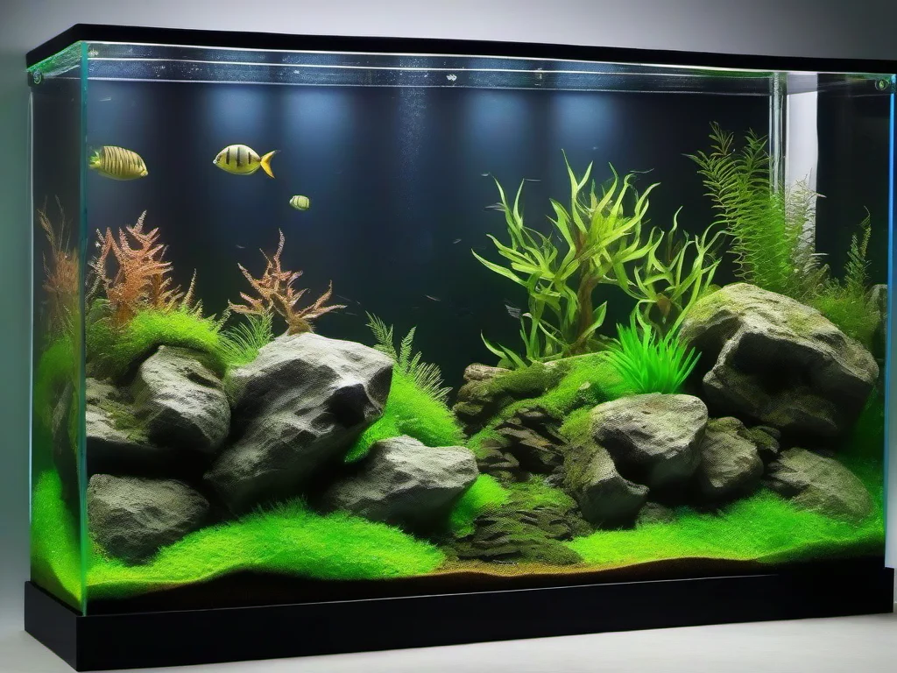

Warum eine 3D-Rückwand? Die Vorteile auf einen Blick
Eine 3D-Rückwand verwandelt jedes Aquarium in ein beeindruckendes Landschaftsbild. Statt einer schlichten einfarbigen Folie oder einem langweiligen grünen Algenbelag an der Rückwand erschaffst du eine plastische Unterwasserlandschaft mit Tiefenwirkung, Höhlen und Terrassen. Die Vorteile liegen auf der Hand:
- Natürliche Optik: Eine selbst gebaute 3D-Rückwand imitiert Felsformationen, Wurzeln oder Flussufer und wirkt wesentlich authentischer als jede Folie.
- Versteckmöglichkeiten: Fische, Garnelen und Wirbellose nutzen die Strukturen als Rückzugsort. Besonders scheue Arten und Jungfische profitieren von den vielen Höhlen und Nischen.
- Struktur für Aufsitzerpflanzen: Moose, Farne und Anubias finden auf der rauen Oberfläche perfekten Halt und wachsen direkt auf der Rückwand an.
- Individuelle Gestaltung: Du bestimmst Form, Farbe und Struktur – von einer glatten Felswand bis hin zu einer verwurzelten Flusslandschaft ist alles möglich.
- Optimale Raumnutzung: Die Rückwand bleibt nutzbar, während du gleichzeitig eine spektakuläre Optik erzielst. Technik wie Heizung oder Filterauslässe lassen sich geschickt hinter der Wand verstecken.
Im Gegensatz zu gekauften Rückwänden aus dem Handel – die oft teuer sind und selten perfekt passen – kannst du eine DIY-Rückwand exakt an die Maße deines Beckens anpassen und ganz nach deinen Vorstellungen formen. Die Materialkosten sind mit etwa 30–80 Euro für ein Standardbecken (100–200 Liter) überschaubar.
Die richtigen Materialien: Was du brauchst
Für den Bau einer aquariensicheren 3D-Rückwand gibt es mehrere bewährte Methoden. Die gebräuchlichste und flexibelste ist die PU-Schaum-Methode (auch als Bauhaus-Methode bekannt), bei der Montageschaum auf eine Trägerplatte aufgetragen und anschließend mit Epoxidharz versiegelt wird. Alternativ arbeitest du mit Styropor-Platten, die du direkt formst und beschichtest.
PU-Schaum (Montageschaum)
Montageschaum aus der Dose – auch als PU-Schaum oder Bauschaum bekannt – ist das Herzstück der meisten DIY-Rückwände. Er lässt sich leicht auftragen, quillt auf und kann nach dem Aushärten mit einem Cuttermesser in jede gewünschte Form gebracht werden. Wichtig: Verwende gerichteten 2K-Montageschaum, der nach dem Aushärten geschlossenporig und wasserfest ist.
Styropor / Polystyrol (XPS)
Styropor-Platten oder noch besser extrudierte XPS-Platten dienen oft als Trägermaterial oder werden direkt zur Formgebung genutzt. XPS ist dichter, stabiler und lässt sich mit einem Heißdraht-Schneidegerät oder einer scharfen Klinge hervorragend bearbeiten. Besonders für große, flächige Strukturen oder als Grundgerüst für die PU-Schaum-Schicht eignet sich XPS perfekt.
Epoxidharz-Beschichtung
Die aquariensichere Versiegelung ist der wichtigste Schritt. Ungeschützter PU-Schaum oder Styropor gibt mit der Zeit Schadstoffe ab und wird von Bakterien und Algen besiedelt. Eine Beschichtung mit lebensmittelechtem Epoxidharz (frei von Weichmachern und Lösungsmitteln) schafft eine harte, wasserfeste und völlig ungiftige Oberfläche. Achte beim Kauf unbedingt auf die Herstellerangabe „aquariensicher" oder „fischsicher".
🛒 Materialien für deine 3D-Rückwand
Alles was du brauchst: PU-Schaum, Epoxidharz, Silikon und Werkzeug für dein DIY-Projekt.
👉 Materialien bei Amazon entdeckenSchritt-für-Schritt-Anleitung: 3D-Rückwand selber bauen
Im Folgenden zeigen wir dir den bewährten Aufbau einer 3D-Rückwand mit PU-Schaum und Epoxidharz-Beschichtung. Plane für das Projekt etwa 3–5 Tage ein – die meiste Zeit entfällt auf das Trocknen der einzelnen Schichten.
Schritt 1: Planung und Vorbereitung
Miss die Rückwand deines Aquariums genau aus. Die Rückwand sollte bündig mit dem oberen Beckenrand abschließen oder 1–2 cm tiefer enden, damit sie nicht über den Rand ragt. Als Trägerplatte verwendest du eine dünne Hartschaumplatte (XPS) oder Plexiglas-Platte, die du auf Maß zuschneidest. Zeichne vorher eine grobe Skizze: Wo sollen Überhänge, Höhlen oder Terrassen entstehen? Denk auch an spätere technische Durchlässe für Filterrohre oder Heizung.
Schritt 2: Zuschnitt der Trägerplatte
Schneide die Trägerplatte mit einer feinen Säge, einem Cuttermesser (mit Führungsschiene) oder einer Stichsäge passgenau zu. Für ein 100-cm-Becken sollte die Platte etwa 98–99 cm breit sein, damit sie später Platz zum Einsetzen hat. Eventuelle Aussparungen für Filtereinläufe oder Heizungen werden jetzt schon angezeichnet und ausgespart.
Schritt 3: Grundstruktur aufbauen (Styropor / XPS)
Wenn du eine besonders plastische Struktur möchtest, klebst du zunächst zugeschnittene Styropor- oder XPS-Stücke auf die Trägerplatte. Verwende 2K-Kleber oder Silikon (aquariensicher). Baue grobe Felsvorsprünge, Höhlen und Plateaus auf. Höhlen sollten eine Öffnung von mindestens 4–5 cm haben, damit auch größere Fische hindurchpassen. Achte darauf, dass keine scharfen Kanten entstehen – Fische können sich daran verletzen.
Schritt 4: Formgebung mit PU-Schaum
Jetzt kommt der Montageschaum zum Einsatz. Trage den Schaum in dünnen Lagen (maximal 3–5 cm dick) auf die strukturierte Trägerplatte auf. Wichtig: Arbeite in mehreren Durchgängen – zu dicker Schaum quillt unkontrolliert und bildet große, ungleichmäßige Blasen. Mit einem feuchten Spachtel oder einem angefeuchteten Pinsel kannst du den frischen Schaum glattstreichen und grobe Formen modellieren. Lass jede Schicht mindestens 6–8 Stunden (besser über Nacht) aushärten.
Nach dem vollständigen Aushärten (24–48 Stunden) geht es ans Formen. Mit einem scharfen Cuttermesser, einer feinen Säge oder einem Heißdraht-Schneidegerät schneidest du den überschüssigen Schaum ab und modellierst die endgültige Form. Runde Kanten ab, arbeite Risse und Spalten ein und schaffe eine möglichst naturnahe Felsoptik. Tipp: Arbeite in mehreren Ebenen – die Rückwand wirkt später dreidimensionaler, wenn sie nicht nur eine flache Schicht ist.
Schritt 5: Strukturierung mit Farbe und Sand
Bevor du versiegelst, kannst du die Rückwand einfärben. Dazu rührst du lebensmittelechte Farbpigmente (Ocker, Braun, Grau, Schwarz) in einer kleinen Menge Epoxidharz an und trägst die Farbe mit einem Pinsel auf. So erhält die Wand eine realistische Gesteinsfarbe. Alternativ bestreust du die noch nasse Harzschicht mit feinem Aquariensand oder Kies – das ergibt eine natürliche, raue Textur, die später perfekt von Moosen und Aufsitzerpflanzen bewachsen wird.
Für einen besonders natürlichen Look empfehlen wir ein Schicht-für-Schicht-Vorgehen: Trage zunächst eine dünne Harzschicht auf, streue Sand auf, lass es aushärten, wiederhole den Vorgang für tiefere Stellen gegebenenfalls mit feinerem oder gröberem Sand.
Schritt 6: Versiegelung mit Epoxidharz
Die Versiegelung ist der wichtigste Schritt für die Aquariensicherheit. Ungeschützter PU-Schaum ist nicht auf Dauer wasserbeständig und könnte Schadstoffe abgeben. Epoxidharz hingegen ist nach dem Aushärten chemisch inert und völlig unbedenklich für Fische und Pflanzen.
So gehst du vor:
- Mische das Epoxidharz exakt nach Herstellerangabe (Harz + Härter).
- Trage das Gemisch mit einem breiten Pinsel oder einem Schaumstoffroller gleichmäßig auf die gesamte Rückwand auf – alle Flächen müssen vollständig bedeckt sein.
- Achte besonders auf Kanten, Höhlendecken und schwer zugängliche Stellen.
- Lass die erste Schicht 12–24 Stunden aushärten.
- Trage eine zweite Schicht auf, um sicherzugehen, dass keine Poren oder unbedeckte Stellen bleiben.
- Nach weiteren 24–48 Stunden Aushärtezeit ist die Rückwand bereit fürs Aquarium.
Wichtig: Arbeite in gut belüfteten Räumen und trage Einweghandschuhe. Epoxidharz riecht während der Aushärtung und kann Hautreizungen verursachen. Das ausgehärtete Harz ist geruchsfrei und ungiftig.
Schritt 7: Bepflanzung der Rückwand
Der große Vorteil einer 3D-Rückwand: Du kannst sie direkt bepflanzen! Moose, Farne und Aufsitzerpflanzen wachsen auf der rauen, mit Sand bestreuten Oberfläche von allein an. Besonders gut geeignet sind:
- Javamoos (Taxiphyllum barbieri) – wächst auf jeder Oberfläche, bildet dichte grüne Teppiche
- Weeping Moos (Vesicularia ferriei) – hängender Wuchs, ideal für Überhänge
- Anubias-Arten – aufsitzend auf Felsvorsprüngen, pflegeleicht
- Javafarn (Microsorum pteropus) – ideal für größere Strukturen
- Bucephalandra – dekorative Aufsitzerpflanze mit schönen Blattfarben
Befestige die Pflanzen mit etwas Spezialkleber für Aquarienpflanzen (Gel-Kleber auf Cyanacrylat-Basis) oder binde sie mit Angelschnur fest, bis sie von selbst angewachsen sind. Nach 3–4 Wochen haben sich die Pflanzen festgesetzt und du kannst die Schnur entfernen.
🛒 Pflanzen und Moose für die Rückwand
Javamoos, Anubias & Co. – alles für die Begrünung deiner 3D-Rückwand.
👉 Pflanzen bei Amazon entdeckenBefestigung im Aquarium: Verkleben mit Silikon
Bevor du die fertige Rückwand einsetzt, reinige die Aquarienrückwand gründlich (entfetten!) und trockne sie ab. Trage mehrere großzügige Raupen aus aquariensicherem Silikon auf der Rückseite der 3D-Rückwand auf – besonders an den Rändern und in der Mitte. Setze die Wand dann ein und drücke sie gleichmäßig an. Fixiere sie mit Klebeband oder leichten Gegenständen, bis das Silikon vollständig ausgehärtet ist (24–48 Stunden). Erst dann darf Wasser ins Becken.
Alternative: Bei kleineren Rückwänden (bis 60 cm Beckenbreite) kannst du die Wand auch einfach einklemmen – der Wasserdruck hält sie meist zuverlässig an Ort und Stelle. Für größere Becken ist Silikon aber die sicherere Wahl. Denk daran: Die Rückwand sollte am oberen Rand bündig mit dem Wasserspiegel abschließen, damit keine Fische hinten die Wand geraten.
Vorteile vs. einfarbige Rückwände und Folien
Eine 3D-Rückwand ist nicht die einzige Option – doch sie bietet gegenüber Alternativen deutliche Vorteile:
| Kriterium | 3D-Rückwand (DIY) | Einfarbige Folie | Fertige Rückwand |
|---|---|---|---|
| Optik | 🌟🌟🌟🌟🌟 (plastisch, natürlich) | 🌟🌟 (flach, einfach) | 🌟🌟🌟🌟 (gut, aber standardisiert) |
| Kosten | 30–80 € | 5–15 € | 60–200+ € |
| Passgenauigkeit | 🌟🌟🌟🌟🌟 (maßgeschneidert) | 🌟🌟🌟 (zuschneidbar) | 🌟🌟 (Standardmaße) |
| Versteckplätze | 🌟🌟🌟🌟🌟 (viele Höhlen) | 🌟 (keine) | 🌟🌟🌟 (je nach Modell) |
| Bepflanzbar | ✅ Ja | ❌ Nein | ✅ Teilweise |
| Arbeitsaufwand | 3–5 Tage | 5 Minuten | 1 Stunde |
Fazit des Vergleichs: Eine DIY-3D-Rückwand erfordert deutlich mehr Zeit und handwerkliches Geschick als eine einfache Folie, liefert aber ein unschlagbar natürliches Ergebnis, das dein Aquarium auf ein ganz neues Niveau hebt. Für Aquascaper und gestaltungsbegeisterte Aquarianer ist sie die erste Wahl.
Pflege und Reinigung der 3D-Rückwand
Eine gute Nachricht: Die Pflege einer 3D-Rückwand ist unkompliziert. Die raue, mit Epoxidharz versiegelte Oberfläche ist glatt genug, um Algenansätze regelmäßig zu entfernen, und zugleich strukturiert genug, dass Pflanzen gut haften:
- Algen: Ein weicher Schwamm oder eine Zahnbürste mit weichen Borsten entfernt Fadenalgen und Kieselalgen von der Oberfläche. Bei starkem Algenbefall hilft eine gezielte Algenbekämpfung.
- Bodengrundreinigung: Mulm, der sich in den Strukturen absetzt, kann mit einer feinen Mulmglocke oder einer Pipette abgesaugt werden.
- Pflanzenpflege: Moose und Aufsitzerpflanzen gelegentlich zurückschneiden, damit sie nicht überwuchern und die Optik beeinträchtigen.
- Haltbarkeit: Eine fachgerecht mit Epoxidharz versiegelte Rückwand hält viele Jahre. Sollte sich an einer Stelle die Versiegelung lösen (z. B. durch mechanische Einwirkung), kannst du die Stelle trockenlegen, anschleifen und neu versiegeln.
Eine selbst gebaute 3D-Rückwand ist das Herzstück jedes naturnahen Aquariums. Sie verwandelt ein einfaches Glasbecken in eine lebendige Unterwasserlandschaft, die Fischen und Pflanzen gleichermaßen zugutekommt.
Häufig gestellte Fragen (FAQ)
Ist PU-Schaum giftig für Fische?
Ausgehärteter PU-Schaum ist ungiftig, sofern er vollständig mit Epoxidharz versiegelt wurde. Ohne Versiegelung kann er mit der Zeit Schadstoffe abgeben und sollte daher niemals unbehandelt ins Aquarium.
Kann ich normale Bauschaum-Dosen aus dem Baumarkt verwenden?
Ja, du kannst handelsüblichen 2K-Montageschaum (geschlossenporig) aus dem Baumarkt verwenden. Wichtig: Nur 2K-Schaum ist wasserfest und für den Aquarienbau geeignet – der einfache 1K-Schaum quillt zu stark und ist nicht ausreichend beständig.
Wie lange hält eine selbst gebaute Rückwand?
Bei guter Verarbeitung und korrekter Versiegelung mit Epoxidharz hält eine DIY-3D-Rückwand 5–10 Jahre oder länger. Die Lebensdauer hängt vor allem von der Qualität der Versiegelung und der mechanischen Belastung ab.
Kann ich die Rückwand später wieder ausbauen?
Ja, mit einem scharfen Messer oder Draht kannst du die Silikonverbindung durchtrennen und die Rückwand entnehmen. Eventuell löst sich dabei die Silikonnaht an der Aquarienscheibe, die du dann erneuern musst.
Welche Fische brauchen besonders viele Verstecke?
Besonders scheue Arten wie Zwergbuntbarsche, Harnischwelse, Panzerwelse und fast alle Garnelenarten profitieren enorm von einer strukturierten Rückwand mit vielen Höhlen. Auch für die Nachzucht sind die Versteckmöglichkeiten wertvoll, da Jungfische dort Schutz finden.
Kann ich die Rückwand auch ohne Epoxidharz nutzen?
Wir raten dringend davon ab. Ohne Epoxidharz-Beschichtung wird der PU-Schaum mit der Zeit porig, nimmt Wasser auf und wird zum Nährboden für unerwünschte Bakterien. Die Versiegelung ist der entscheidende Schritt für die Langlebigkeit und Aquariensicherheit deiner Rückwand.
Fazit
Eine 3D-Rückwand fürs Aquarium selber zu bauen ist ein lohnendes DIY-Projekt, das deinem Becken eine völlig neue Dimension verleiht. Mit überschaubaren Materialkosten, etwas Geduld und den richtigen Arbeitsschritten erschaffst du eine einzigartige Unterwasserlandschaft, die sowohl optisch beeindruckt als auch deinen Fischen wertvolle Versteck- und Laichmöglichkeiten bietet. Die Kombination aus PU-Schaum, Styropor-Strukturen und einer professionellen Epoxidharz-Versiegelung liefert ein Ergebnis, das mit gekauften Rückwänden problemlos mithalten kann – und in puncto Individualität und Passgenauigkeit sogar überlegen ist.
Ob du nun ein Gesellschaftsbecken, ein Artbecken für Garnelen oder ein aufwändiges Aquascape einrichtest – eine selbst gebaute 3D-Rückwand ist die Königsklasse der Beckengestaltung. Probiere es aus! Deine Fische werden es dir danken.
Mehr zur Gestaltung deines Aquariums findest du in unseren Guides zum Aquascaping für Anfänger und zum Einsteiger-Aquarium. Auch Wurzeln und Holz lassen sich perfekt mit einer 3D-Rückwand kombinieren.